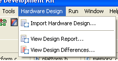

The Hardware Design menu contains the following items:
| Name | Function | Keyboard Shortcut |
|---|---|---|
| Import Hardware Design | Specify a hardware specification file required for software application development | None |
| View Design Report | Opens the Design Report for the System in the browser | None |
| View Design Differences | Opens the Hardware system design difference between the current and previous referenced system in the browser. If this is the only referenced hardware system, then this menu item is disabled. | None |
Copyright © 1995-2009 Xilinx, Inc. All rights reserved.